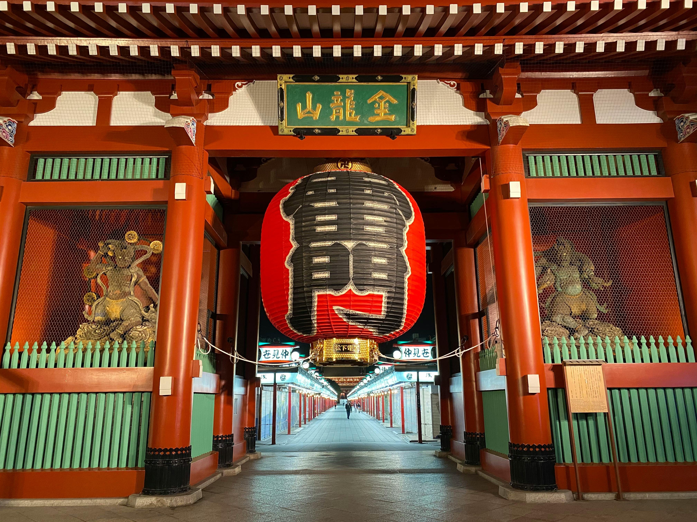
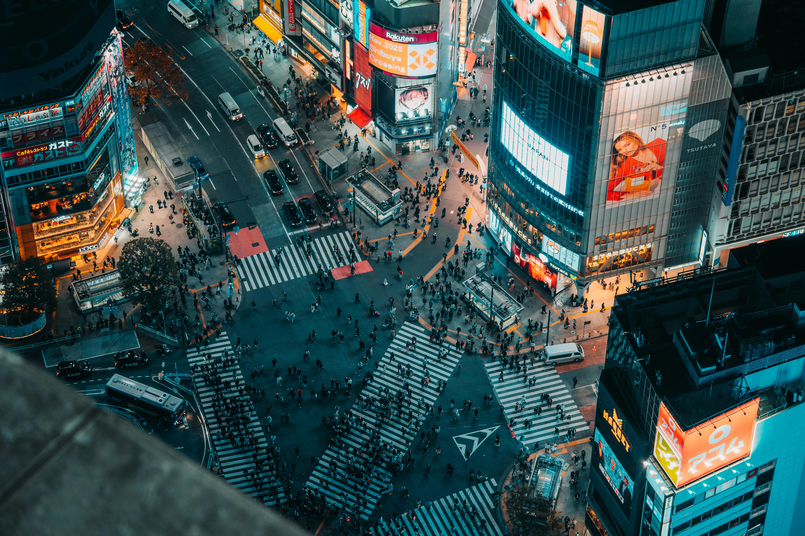
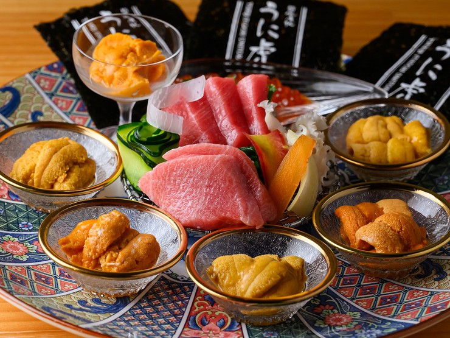

淺草寺：雷門下的江戶祈願
淺草寺始建於西元 628 年，是東京最古老的寺院。穿過寫有「雷門」二字的巨大紅色燈籠，走在充滿下町風情的仲見世通，兩旁林立著江戶風味的小吃與工藝品。這裡不只是東京的信仰中心，更是感受江戶時代遺風、體驗東京傳統靈魂的必經之地。
-
雷門 (Kaminarimon) 守護淺草寺的大門，左右安置著風神與雷神像，那盞重達 700 公斤的巨型紅提燈，是東京最具代表性的視覺象徵。
-
本堂與五重塔 莊嚴的聖觀音宗總本山，搭配高聳入雲的五重塔，在夜間點燈下呈現出與日間截然不同的靜謐美學。

澀谷交差點：都市的脈動心臟
當綠燈亮起，上千名行人同時湧入街頭。這裡是東京「不眠城市」的縮影，展現著無邊界的生命力。澀谷，是東京永遠的動能核心。當你站在著名的「澀谷站前交叉口」，看著綠燈亮起時四面八方湧入的人潮，那種震撼感足以定義這座城市的活力。這裡不只是流行時尚的發源地，更是一個在霓虹燈火與摩天大樓交織下，不斷重塑未來的現代迷宮。 隨著近年「澀谷再開發計畫」的推動，從地面延伸至 229 公尺高空的 Shibuya Sky 展望台，已成為鳥瞰這座不眠城的最佳據點。在這裡，你可以看見最尖端的科技、最叛逆的街頭文化，以及隱藏在巷弄間充滿人文氣息的獨立買手店與咖啡館。澀谷，正以其包容萬象的姿態，向世界宣告著東京的未來。

築地時令：舌尖上的海洋極致
東京的味覺記憶始於清晨。職人以精湛刀工處理海味，捏製出鮮甜與醋飯完美平衡的壽司。 東京的味覺記憶，往往始於清晨魚市場的叫賣聲。即便築地內場已搬遷至豐洲，但「築地場外市場」依然保留著那份濃厚的江戶煙火氣。職人們對於食材鮮度的絕對堅持，在每一枚精緻的握壽司中展露無遺。 每一場壽司饗宴，都是一場與時間賽跑的儀式。從挑選當令最肥美的「旬」之味，到精確掌控醋飯的溫度與酸度，職人以精湛刀工處理海味，讓鮮甜的魚肉與溫潤的米飯在舌尖達成完美平衡。這不僅僅是美食，更是東京對工匠精神（Monozukuri）最溫柔、最極致的體現，讓每一口品嚐都如同音符般，交織出多層次的味覺變奏曲。
